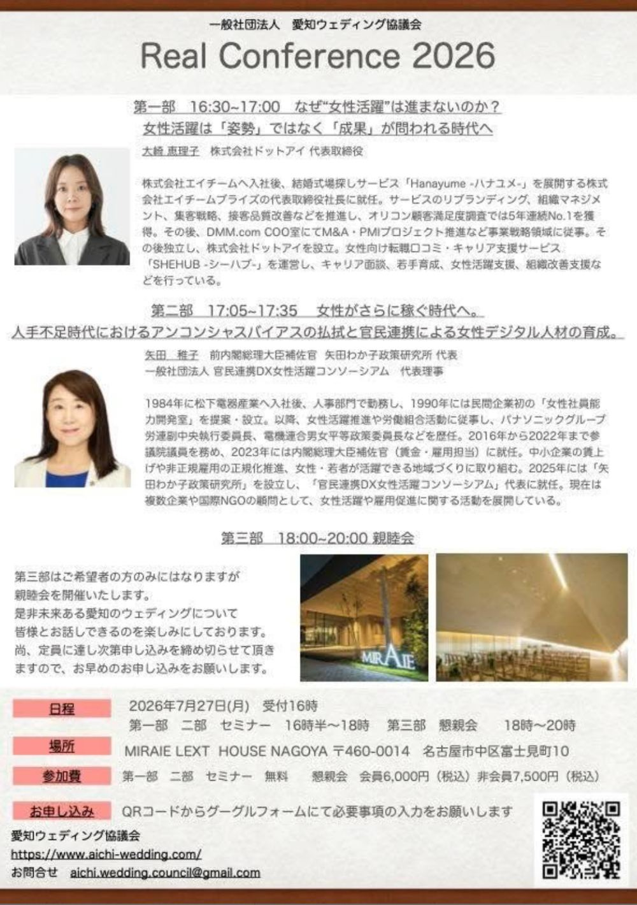

一般社団法人 愛知ウェディング協議会主催による「Real Conference 2026」を開催いたします。

今回は、「女性活躍」「アンコンシャスバイアスの払拭」「女性デジタル人材の育成」をテーマに、最前線で活躍する講師陣をお招きしたセミナーをお届けします。
ウェディング業界は、多くの女性が活躍する業界です。だからこそ、女性が本当に力を発揮できる環境をどうつくるかは、業界の未来に直結する重要なテーマです。「女性活躍」という言葉が掲げられて久しいなか、いま改めて、成果につながる形でそれを実現するには何が必要なのかを、共に考える機会にしたいと思います。
セミナー後は、未来ある愛知のウェディングについて語り合う懇親会もご用意しております。皆様のご参加を、心よりお待ちしております。
なぜ“女性活躍”は進まないのか？
女性活躍は「姿勢」ではなく「成果」が問われる時代へ
株式会社エイチームへ入社後、結婚式場探しサービス「Hanayume -ハナユメ-」を展開する株式会社エイチームブライズの代表取締役社長に就任。サービスのリブランディング、組織マネジメント、集客戦略、接客品質改善などを推進し、オリコン顧客満足度調査では5年連続No.1を獲得。その後、DMM.com COO室にてM&A・PMIプロジェクト推進など事業戦略領域に従事。その後独立し、株式会社ドットアイを設立。女性向け転職口コミ・キャリア支援サービス「SHEHUB -シーハブ-」を運営し、キャリア面談、若手育成、女性活躍支援、組織改善支援などを行っている。
ブライダル企業の経営トップを務められた経験もお持ちの大崎氏。「姿勢」ではなく「成果」という切り口は、きれいごとで終わらせない、実践的なお話が期待できます。
女性がさらに稼ぐ時代へ。
人手不足時代におけるアンコンシャスバイアスの払拭と、官民連携による女性デジタル人材の育成。
1984年に松下電器産業へ入社後、人事部門で勤務し、1990年には民間企業初の「女性社員能力開発室」を提案・設立。以降、女性活躍推進や労働組合活動に従事し、パナソニックグループ労連副中央執行委員長、電機連合男女平等政策委員長などを歴任。2016年から2022年まで参議院議員を務め、2023年には内閣総理大臣補佐官（賃金・雇用担当）に就任。中小企業の賃上げや非正規雇用の正規化推進、女性・若者が活躍できる地域づくりに取り組む。2025年には「矢田わか子政策研究所」を設立し、「官民連携DX女性活躍コンソーシアム」代表に就任。現在は複数企業や国際NGOの顧問として、女性活躍や雇用促進に関する活動を展開している。
政策の最前線で女性活躍に取り組んでこられた矢田氏より、人手不足時代の大きな視点でお話しいただきます。
第3部はご希望者の方のみとなりますが、懇親会を開催いたします。未来ある愛知のウェディングについて、皆様とざっくばらんにお話しできる時間を楽しみにしております。定員に達し次第、締め切らせていただきますので、お早めにお申し込みください。
セミナーは無料です。会員の皆さま、そして非会員の皆さまも、ぜひこの機会にご参加ください。